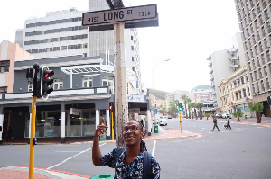

Historic places in Cape Town
City Hall
City Hallon 29 August 1900 but the hall was only opened in 1905 one of the last major Victorian buildings to be erected in Cape Town.

Bo-Kaap
Cape Town, South Africa
Bo-Kaap is known for its brightly coloured homes and cobble stoned streets
largest concentration of pre-1850 architecture in South Africa.
Long Street
section was later opened in 1929. its beautiful architecture and diverse offering to both night aytime visitors – gives it an appeal and attraction like few other places in Cape Town.
